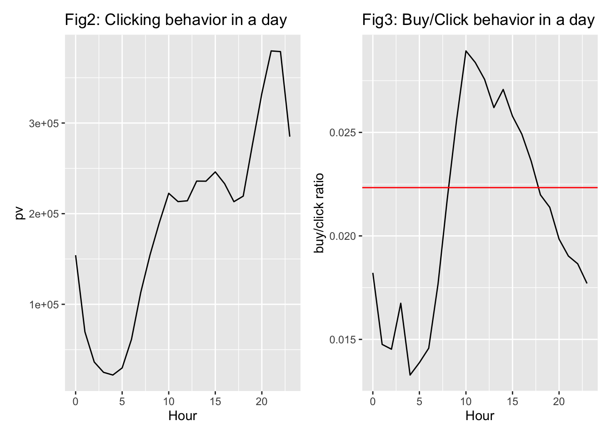
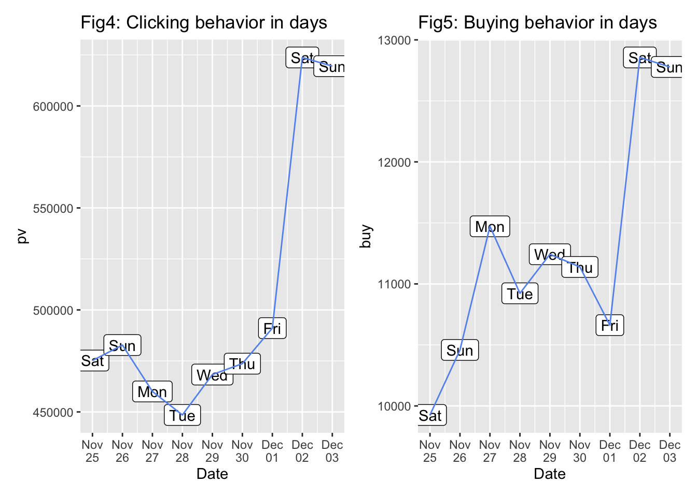
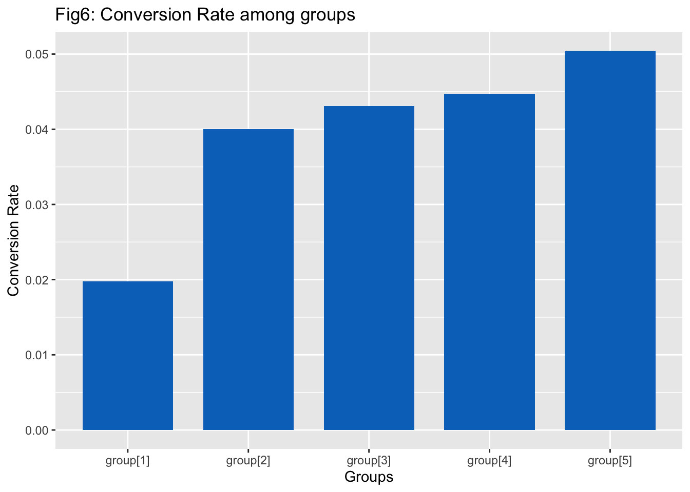
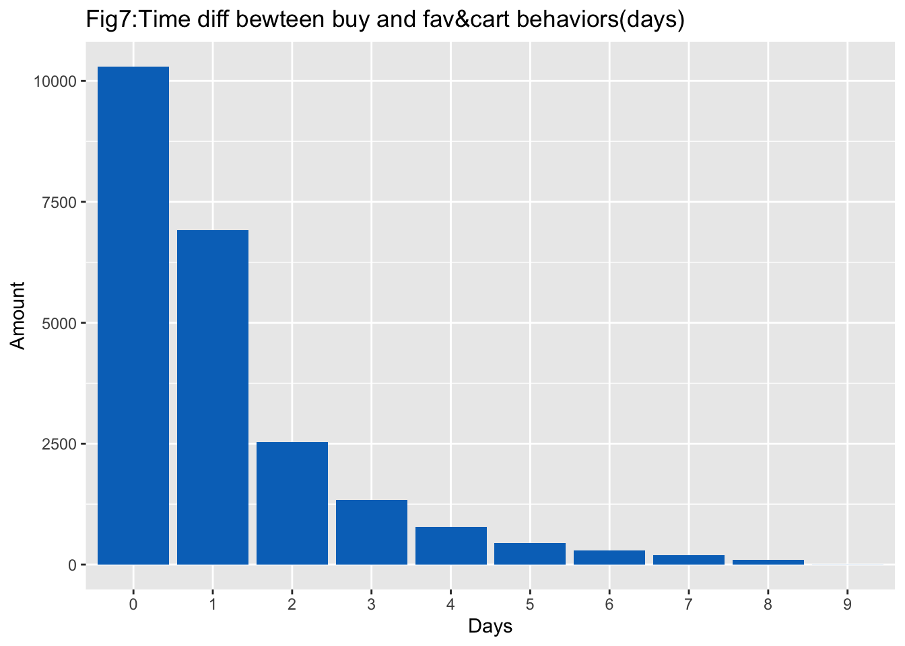
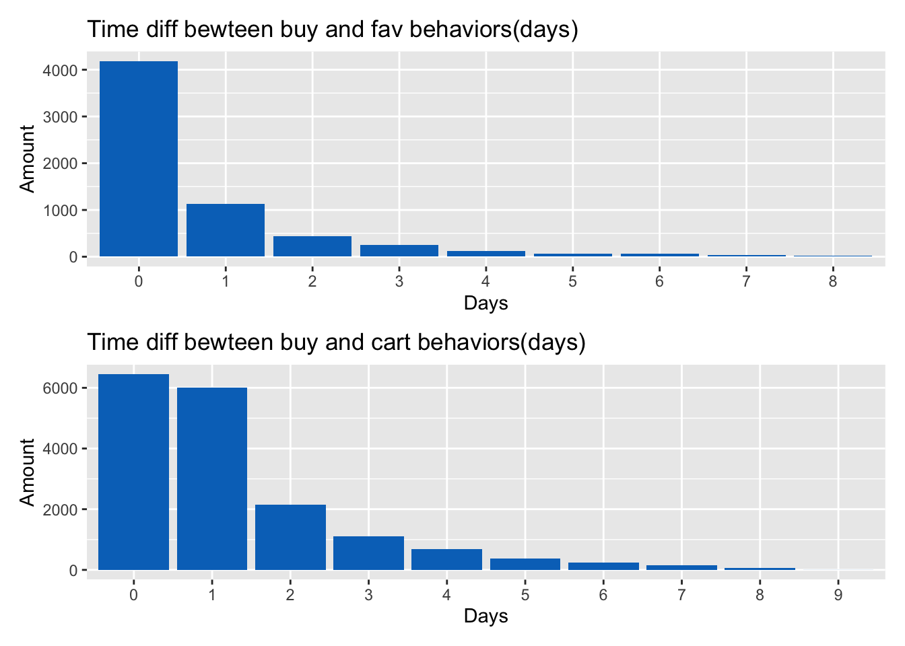
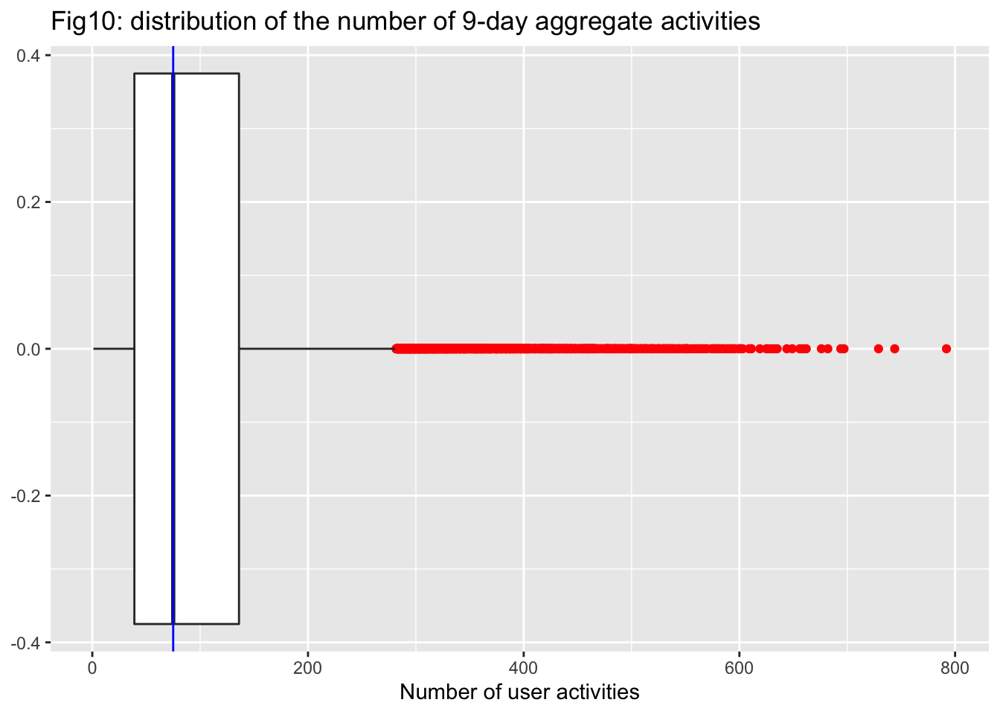

Chapter 5 Results
5.1 Overview of dataset
In China, people might prefer to add items to cart to mark their favorite items, but adding something to cart does not necessarily mean people will buy them in a few hours. Since the difference between fav and cart is not that clear, we decide to interpret fav and cart as the same type of behavior and call it fav&cart in the main part of analysis.
We first draw a funnel chart to see the percentage of different kinds of User Behaviors. As we can see in Fig 1, clicking behavior has taken most of the part, and buying only takes 2% of the total behaviors, which is a baseline and we will talk about it later. It might come to our mind that this distribution shall be rather stationary, which means users click similar times everyday, and the conversion rate for them to turn their clicking behaviors into buying the staff shall be the same.
5.2 Analysis by Hours
So we tried to draw a distribution of clicking and buying behavior in a day. In Fig 2, it is not surprising for us to see that the clicking behavior is rather stationary during the day time from 10am to 6pm. However, the clicking behaviors gradually increase by 80% between 6pm and 9pm. It clearly shows that Chinese online shopping users would like to go through the online stores as a recreation after work.
It becomes even more interesting if we look at Fig 3. We make a graph using the amount of buying behaviors divide by the amount of clicking behaviors. In the funnel chart, the average ratio of buy/pv is about 2.2% in total(which is represented by the red line in Fig 3).However, if we try to look at this ratio deeper, we find that after 6pm, when people start to click on the app in high frequency, it seems that their clicking behavior cannot turning into buying behavior at the same scale. This also proves that people might regard searching and merely looking online merchandise as recreation.

5.3 Analysis by days
Then we start to observe the data in different days. We might speculate that users might be more active during weekends since they do not need to go to work. However, things become a little bit strange in Fig 4. For the first weekend(Nov 25, Nov 26), there is no significant difference between weekend and weekdays. For the second weekend(Dec 02, Dec 03), the total number of clicking behavior rocketed by about 20% and this is surly significant.
To explain this, our conjecture is that there might be sales promotion during second week. We tried to find past news but nothing was found. To make our conjecture a little bit convincing, we draw the buying behavior for each day in Fig 5. There is one thing rather interesting: Nov 26 and Dec 01 are the days when users are rather active, however their buying behavior are strangely low compared to the next day or the day before. There was a possibility that there were some sales promotion on Nov 27 and Dec 02, so people preferred to go through the app or website to search for items they would like to buy one day before the sales promotion. This might explain the days with higher user activity receive relatively low order from users.

5.4 Analysis by Item Category
Another question is that: does conversion rate keep constant between popular items and the others? Or, are people more likely to buy the stuff which they click a lot? To do this, first we find out there are 4186 kind of items are bought. We divide them into 5 groups(about 800 category each) according to their clicking times descendingly, and calculate their conversion rate(buy/clicking). Here we get Fig 6 below:

As we can see in the graph above, the higher the clicking rate a product category has, the lower its conversion rate is. In another word, those product that were viewed most frequently are less likely to be bought by the user. We made three conjectures about this behavior:
This can be due to the fact that the product with the highest clicking rate are the ones that are commonly recommended by the system. People might be interested in clicking the product but they might already have an ideal product in their mind. Therefore, they are less likely to buy them.
Those product are the ones that catches people’s attention but are too costly. For example, people like to click on luxury products such as gaming laptops or designer clothing, but are unlikely to buy them due to the high price.
This can also be due to malicious user behavior, such as click-farming. This is a common problem for US online shopping platform such as Ebay and Amazon, where users are paid to click or buy a product to increase its popularity in the recommender system.
5.5 Analysis the relationship bewteen fav&cart and buy
Here we are trying to analysis how buying behavior is affected by fav&cart behavior. Since our trading data is cut from the whole time flow, it’s possible that someone fav&cart an item before the start time of our data and buy it during the 9 days(in our data time span), or vice versa. So here we just focus on existing fav&cart-buy pairs and see their pattern.
To do this, we filter out those items one customer fav&cart and buy, and calculate difference of time for these two behaviors. In fact, there is a small portion of data which is negative (only 5.4%, 23654 sample size in total), which is rather logical and prove the feasibility of our analysis. We will ignore the negative values and plot the time diff bar plot:

From the graph, it is obvious that most people tend to pay for their noted items in 2 days(about 75%),and the possibility is strictly decreasing. Surely, this is due to our limited time span, those trade in long time span are more likely to not be recorded in data. However, this provide us a good way to think about: when you fav&cart a item, what is the likelihood that you will buy it? What’s more, what’s the minor difference between fav and cart? We may explore it from the time diff and the likelihood to pay for different behaviors.
In fact, we search for fav-buy pair and cart-buy pair and use them to calculate conversion rate of fav = (fav-buy pair amount)/total fav behaviors and conversion rate of cart = (cart-buy pair amount)/total fav behaviors, and we implement the analysis of fav&cart into fav and cart data separately, we shall get the graph below:
It shows that most(66.2%) buy-fav pair just happen in half day while buy-cart pair can be more diverse.However, it’s more likely for someone pay for the stuff if they add it to cart.
## [1] "The proportion of buying stuff in half day after fav is 0.661918"## [1] "The conversion rate of fav is 0.044993"## [1] "The proportion of buying stuff in half day after cart is 0.373897"## [1] "The conversion rate of cart is 0.063948"
5.6 Analysis of Users
We are curious about User behavior patterns and we first retrieve the number of activities that each single user performs and plot them in a box plot. Figure 10 displays the box plot displaying the number of user activities over the 9 days:

We colored all the outliers in red in the graph above and it seems that there are quite a lot of outliers on the right side which means the distribution is right-skewed. After that, we divide our users into two groups, one for the outliers and one for the others, and calculate average number of two groups to see if their behavior pattern might be different.
## [1] "The average activity of outlier users:"## # A tibble: 3 × 2
## Behavior_type count
## <chr> <dbl>
## 1 buy 3.75
## 2 fav&cart 25.7
## 3 pv 332.## [1] "The average activity of ordinary users:"## # A tibble: 3 × 2
## Behavior_type count
## <chr> <dbl>
## 1 buy 1.94
## 2 fav&cart 7.62
## 3 pv 78.8It is quite funny that the outlier users buy twice as much stuff than the others on average, however they also pay four times of attention on online shopping activity.